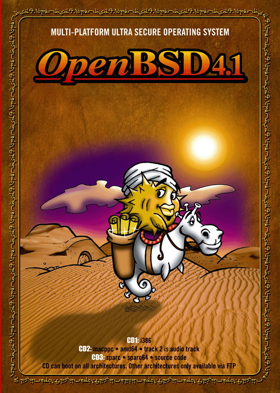

![[OpenBSD]](../images/smalltitle.gif)

La Version 4.1 d'OpenBSD :
A paraître le 1er Mai 2007
Copyright 1997-2007, Theo de Raadt.
ISBN 978-0-9731791-9-4
Chanson accompagnant la version 4.1 : (pas encore annoncée)
Quoi de neuf ?
Procédure d'installation
Procédure de mise à niveau
Utilisation de l'arborescence des ports
Commander les CDROM
Pour obtenir les fichiers de cette version :
- Commandez un CDROM à partir de notre
système de commandes.
- Consultez les informations sur la page FTP
pour une liste de machines miroirs.
- Allez dans le répertoire
pub/OpenBSD/4.1/ sur l'un des sites miroirs.
- Lisez brièvement le reste de ce document.
- Jetez un oeil sur la page des errata 4.1
pour une liste des bogues et des solutions.
- Regardez la liste détaillée des
changements entre les versions 4.0 et 4.1.
Remarque : Tous les copyrights applicables et les
différents crédits se trouvent dans les fichiers source contenus dans
src.tar.gz, sys.tar.gz, XF4.tar.gz ou dans les fichiers récupérés par
l'intermédiaire de ports.tar.gz. Les fichiers utilisés pour construire
les paquetages composant le fichier ports.tar.gz ne sont pas inclus sur
le CDROM par manque de place.
Quoi de neuf?
Ceci est une liste partielle des nouvelles fonctionnalités présentes
dans OpenBSD 4.1. Pour une liste complète, voir le
journal des changements jusqu'à la version 4.1.
- Nouvelles (ou améliorations de) plates-formes :
- OpenBSD/landisk.
Plusieurs systèmes embarqués basés sur SH4, fabriqués par IO-Data et
certains revendus sous la marque Plextor.
- OpenBSD/sparc64.
Les machines basées sur de l'UltraSPARC III sont encore mieux supportées
et fonctionnent à pleine vitesse !
- Plates-formes supprimées :
- OpenBSD/cats.
Car les machines deviennent très rares à trouver et les développeurs les
haîssent.
- Meilleur support matériel incluant :
- Support de nouveaux clients USB :
- Support de la fonctionnalité client USB dans
le pilote pxaudc(4) pour Zaurus.
- Nouvelle couche client USB avec le pilote usbf(4).
- Nouveau pilote cdcef(4) fournissant la fonction CDCE pour les contrôleurs USB.
- Nouveau pilote cas(4) pour les périphériques Sun Cassini 10/100/Gigabit Ethernet.
- Nouveau pilote uow(4) pour les périphériques Maxim/Dallas DS2490 USB 1-Wire.
- Nouveau pilote owsbm(4) pour les sondes 1-Wire smart battery.
- Nouveau pilote zyd(4) pour les périphériques réseaux sans-fil ZyDAS ZD1211/ZD1211B USB IEEE 802.11b/g.
- Nouveau pilote moscom(4) pour les adaptateurs USB série basés sur du MosChip Semiconductor MCS7703.
- Nouveau pilote glxsb(4) pour la génération de nombres aléatoires et l'accélération AES des processeurs AMD Geode LX.
- Nouveau pilote vic(4) pour les contrôleurs VMware VMXnet Virtual Interface.
- Nouveau pilote malo(4) pour les périphériques réseaux sans-fil Marvell Libertas IEEE 802.11b/g.
- Nouveau pilote pwdog(4) pour les périphériques Quancom PWDOG1 watchdog timer.
- Nouveau pilote uberry(4) supportant les périphériques Blackberry de chez "Research In Motion" (RIM).
- Nouveau pilote mbg(4) pour les horloges radio Meinberg Funkuhren.
- Nouveau pilote mesh(4) pour le contrôleur SCSI intégré des systèmes Apple Power Macintosh "old world" (ancienne génération).
- Nouveau pilote mc(4) pour le contrôleur intégré des systèmes Apple Power Macintosh "old world" (ancienne génération).
- Amélioration du pilote msk(4) qui supporte beaucoup plus de variantes Marvell Yukon-2 telles que les cartes dual port et fibre.
- Le pilote gem(4) supporte désormais les cartes fibre.
- Amélioration de la gestion temporelle sur la plate-forme
OpenBSD/amd64.
- Le programme (pour OpenBSD/i386)
boot(8)
fonctionne correctement sur les Macs basés sur de l'Intel.
- Le pilote pciide(4) supporte de nouveaux chipsets, tels que :
- AMD CS5536 IDE;
- Intel i31244;
- NVIDIA MCP67 PATA, MCP67 SATA.
- Le pilote com(4) supporte à présent les périphériques ST16C654.
- Le pilote adt(4) supporte à présent de nouveaux périphériques, tels que l'ADT7475.
- La plate-forme OpenBSD/macppc redémarre automatiquement la machine en cas de coupure de courant.
- boot.mac, un chargeur de démarrage formaté en XCOFF pour OpenBSD/macppc est capable de démarrer de nombreux Macs "old world" (ancienne génération).
- Nouveaux outils :
- Nouveau programme sous licence BSD, pkg-config(1),
une réécriture complète de l'outil GNU homonyme, plus petit et plus
facilement maintenable.
- Un nouveau service, hoststated(8),
pour la balance de charge au niveau 3 et 7 et la surveillance d'hôtes.
- Nouveau programme ripd(8) sous licence BSD.
- bgplg(8), une interface miroir CGI pour OpenBGPD, est désormais disponible avec le serveur httpd du système.
- bgplgsh(8), une interface miroir shell pour OpenBGPD, est désormais disponible en tant qu'interface de commandes restreinte en lecture seule.
- Nouvelles fonctionnalités :
- syslogd(8)
peut à présent passer les logs directement vers d'autres programmes, ce
qui simplifie l'analyse des journaux.
- L'option de socket
ip(4)
IP_RECVTTL permet à des programmes de recevoir le ttl entrant sur des
sockets raw et udp.
- L'option de socket
ip(4)
IP_MINTTL permet à des programmes de demander au noyau d'ignorer tout
paquet dont le ttl est plus petit que celui donné afin de pouvoir
implémenter le "hack" de sécurité IP TTL connu sous le nom de Mécanisme
de Sécurité TTL Généralisé, spécifié dans la RFC 3682.
- Tables de routage multiples et indépendantes en utilisant
pf(4)
comme sélecteur.
Possibilité de spécifier à
route(8)
sur quelle table l'on souhaite agir ; les différents services de routage
ont été modifiés en conséquence.
- L'interface
pflog(4)
est à présent clonable.
pf(4)
peut désormais loguer plusieurs interfaces pflog, chaque règle pouvant
spécifier sur quelle interface pflog celle-ci souhaite loguer.
Possibilité de spécifier à
pflogd(8) et
spamlogd(8)
sur quelle interface pflog on souhaite agir.
- L'interface
pfsync(4)
est à présent clonable également, mais est seulement présente lorsque
cela est nécessaire.
-
pfctl(8)
peut désormais faire expirer les entrées des tables.
- keep state est à présent défini par défaut pour les règles de
pf.conf(5)
tout comme l'option flags S/SA en ce qui concerne les connexions
TCP. Les options no state et flags any peuvent y être
utilisées afin de désactiver le suivi des états ou la vérification des
drapeaux TCP.
- L'optimiseur de règles de
pfctl(8)
peut être activé dans le fichier
pf.conf(5).
- Les ancres
pf(4)
peuvent être chargées directement à l'intérieur du fichier
pf.conf(5)
principal et s'afficher récursivement.
- Possibilité pour les règles
pf(4)
à l'intérieur d'ancres de réinitialiser leur compteurs et aux compteurs
de lire et réinitialiser une opération atomique.
-
sensorsd(8)
tempère les changements de statuts et ne produit pas d'alerte en cas
d'une seule lecture erronnée d'une sonde car beaucoup d'entre elles
"mentent" de temps en temps.
-
spamd(8) et
spamlogd(8)
supportent à présent la synchronization des bases de greylisting entre
différents hôtes. Le mécanisme de greytrapping permet de mettre en place
des trappes sur des domaines entiers ainsi que la découverte de MX
hors-service.
-
Le format de la base de donnée de
spamd(8)
a changé de DB_BTREE vers DB_HASH afin d'améliorer les performances sur
les grosses installations avec de larges bases.
-
Le pilote
bridge(4)
et l'utilitaire
brconfig(8)
supportent le RSTP ("Rapid Spanning Tree Protocol"). Ce nouveau mode est
activé par défaut lorsque l'option stp est utilisée.
- cd(4)
peut désormais lire les DVDs à protection régionale.
- Détecte les
systèmes de fichiers MS-DOS
et leur applique une partition disklabel même lorsqu'il n'y a pas de MBR
comme c'est le cas sur les nouveaux iPods par exemple.
- Améliorations et nettoyage de code :
- La commande
fsck_ffs(8)
a été améliorée afin d'être plus robuste aux différentes formes de
corruptions d'inode et de superblock.
- Nouvelles possibilités de filtrage de la sortie de l'utilitaire
top(1).
- La prise en charge du descripteur de fichier par
pthreads(3)
a été améliorée afin d'éliminer plusieurs situations de concurrences et
de blocages et pour en augmenter la performance.
- Le
système de fichiers MS-DOS
a été corrigé afin d'éviter une éventuelle corruption et est à présent
plus fiable lors du montage d'un système de fichiers corrompu.
- Le
système de fichiers MS-DOS
ainsi que la commande
fdisk(8)
ont été améliorés afin de fonctionner sur les périphériques avec 2048
secteurs comme par exemple les nouveaux iPods.
- Amélioration de la gestion des fichiers par les utilitaires
OpenRCS,
surtout lorsqu'il s'agit de fichiers binaires. La compatibilité avec GNU
RCS a également été augmentée.
- L'éditeur
mg(1)
affiche désormais le numéro des colonnes dans la barre de status.
Plusieurs améliorations ont également été apportées afin de le rendre
plus fiable : numéros de ligne, insertions de fichiers et recherche
cyclique fonctionnent correctement.
- La commande
systat(1)
produit une sortie plus propre et une option a été ajoutée pour les
sondes matérielles.
- La plate-forme OpenBSD/alpha utilise
désormais gcc3.
- Amélioration du support pour les lecteurs cd usb ainsi que d'autres
lecteurs
umass(4)
peu communs.
- Ne pas considérer une partition MBR NetBSD ou FreeBSD comme
substitut d'une partition OpenBSD ; à savoir, ne pas tenter de démarrer
à partir de l'une d'elles ni d'y stocker des disklabels OpenBSD.
- Changements dans la procédure d'installation/mise à jour :
- Détection des disques et cd plus fiable.
- Installation plus fiable à partir de partitions MSDOS.
- Nouveau test permettant de vérifier que les sets correspondent bien
à l'achitecture sélectionnée.
- Inutile de spécifier les types de systèmes de fichiers des
partitions source lors d'installation via disque ou cd.
- Inutile de spécifier une partition source lors d'installation via
disque ou cd lorsqu'une seule est disponible.
- OpenBGPD 4.1 :
- Fix pour les sessions avec tcp md5sig et ipsec. A présent, celles-ci
peuvent migrer à partir de et vers n'importe qu'elle forme d'ipsec et de
tcpmd5 avec un simple bgpctl reload, la session migrera alors
la prochaine fois qu'elle sera établie.
- Possibilité d'inclure un fichier dans la configuration.
- Possibilité d'utiliser la nouvelle option de socket IP_MINTTL afin
de mettre en oeuvre le mécanisme de sécurité ttl.
- OpenOSPFD 4.1 :
- Support du rechargement ("reload"). Il n'est désormais plus
nécessaire de redémarrer ospfd après un changement de configuration.
- Support de plusieurs réseaux par interface.
- Possibilité de spécifier le type et metric de la route pour chaque
règle de redistribution.
- OpenNTPD 4.1 :
- Support grandement amélioré des sondes temporelles.
- ntpd
utilise désormais un système d'incrément temporel strictement
monotonique (uptime) pour ses temporisateurs internes ; ainsi configurer
l'horloge système n'influence plus les taux de connexion, les niveaux
de confiance...
- OpenSSH 4.6 :
- sshd
permet désormais d'activer et désactiver les méthodes
d'authentification basé sur l'utilisateur, le groupe, l'hôte et le
réseau via la directive Match du fichier
sshd_config(5).
- Plus de 4200 ports, 4000 paquetages pré-compilés (pour i386) et des
améliorations des outils de gestion des paquetages.
Exemples de mises à jour et ajouts intéressants :
- outils gstreamer-0.10.
- paquetage pour OpenOffice.org, uniquement disponible par ftp pour
des questions de taille.
- KDE 3.5.6 et koffice 1.6.2.
- un grand nombre (> 500) de modules perl ajoutés/mis à jour, de
CPAN, avec entre autre le framework catalyst.
- l'IDE Java NetBeans 5.5.
- mise à jour de l'émulation Linux avec l'utilisation des
bibliothèques de Fedora Core.
- Mozilla Firefox 2.0.0.2 (et ses traductions).
- PostgreSQL 8.2.3.
- Comme d'habitude, de nombreuses améliorations dans les pages de
manuel et autres documentations.
- Le système comporte les composants majeurs suivants fournis
par des entités externes :
- X.Org 6.9.0 (+ correctifs, et i386 contient les serveurs XFree86 3.3.6
(+ correctifs) pour les chipsets non supportés officiellement par X.Org)
- Gcc 2.95.3
(+ correctifs)
et 3.3.5
(+ correctifs)
- Perl 5.8.8 (+ correctifs)
- Notre propre version améliorée et sécurisée d'Apache 1.3.29 avec
SSL/TLS et DSO support
- OpenSSL 0.9.7j (+ correctifs)
- Groff 1.15
- Sendmail 8.14.0 avec libmilter
- Bind 9.3.4 (+ correctifs)
- Lynx 2.8.5rel.4 avec HTTPS et IPv6 support (+ correctifs)
- Sudo 1.6.8p9
- Ncurses 5.2
- Latest KAME IPv6
- Heimdal 0.7.2 (+ correctifs)
- Arla 0.35.7
- Binutils 2.15 (+ correctifs)
- Gdb 6.3 (+ correctifs)
Procédure d'installation
Vous pouvez consulter ci-dessous les instructions figurant sur le livret
accompagnant les CDROMs, dont vous disposeriez si vous aviez acheté les
CDROMs au lieu d'utiliser une des autres possibilités d'installation.
Les instructions pour faire une installation par FTP (ou tout autre type
d'installation) sont très similaires ; les instructions du CDROM sont
reproduites ici telles quelles, de sorte que vous puissiez voir combien
cela aurait été plus facile si vous aviez acheté un CDROM.
Veuillez consulter les fichiers suivants sur les trois CDROMs pour plus
de détails concernant l'installation d'OpenBSD 4.1 sur votre machine :
- CD1:4.1/i386/INSTALL.i386
- CD2:4.1/amd64/INSTALL.amd64
- CD2:4.1/macppc/INSTALL.macppc
- CD3:4.1/sparc/INSTALL.sparc
- CD3:4.1/sparc64/INSTALL.sparc64
- FTP:.../OpenBSD/4.1/alpha/INSTALL.alpha
- FTP:.../OpenBSD/4.1/armish/INSTALL.armish
- FTP:.../OpenBSD/4.1/hp300/INSTALL.hp300
- FTP:.../OpenBSD/4.1/hppa/INSTALL.hppa
- FTP:.../OpenBSD/4.1/landisk/INSTALL.landisk
- FTP:.../OpenBSD/4.1/luna88k/INSTALL.luna88k
- FTP:.../OpenBSD/4.1/mac68k/INSTALL.mac68k
- FTP:.../OpenBSD/4.1/mvme68k/INSTALL.mvme68k
- FTP:.../OpenBSD/4.1/mvme88k/INSTALL.mvme88k
- FTP:.../OpenBSD/4.1/sgi/INSTALL.sgi
- FTP:.../OpenBSD/4.1/vax/INSTALL.vax
- FTP:.../OpenBSD/4.1/zaurus/INSTALL.zaurus
Informations pour une installation rapide, faites pour les personnes
familières avec OpenBSD, et l'utilisation de la commande "disklabel -E".
Si vous n'êtes pas à l'aise avec l'installation d'OpenBSD, lisez les
fichiers INSTALL.* correspondants cités ci-dessus !
OpenBSD/i386 :
Manipulez les options du BIOS, et voyez si vous pouvez démarrer depuis
le CDROM. La version OpenBSD/i386 est sur le CD1. Si votre BIOS ne
supporte pas l'amorçage depuis le CDROM, vous devrez créer une disquette
de boot pour l'installation. Pour faire une disquette de boot, copiez
CD1:4.1/i386/floppy40.fs sur une disquette, et démarrez dessus.
Utilisez CD1:4.1/i386/floppyB40.fs pour un meilleur support des
contrôleurs SCSI, ou CD1:4.1/i386/floppyC40.fs pour un meilleur
support des ordinateurs portables.
Si vous ne pouvez pas démarrer à partir d'un CD ou d'une disquette, vous
pouvez utiliser la procédure d'installation par le réseau en utilisant
PXE tel que c'est décrit dans le document INSTALL.i386.
Si vous désirez mélanger OpenBSD avec un autre système d'exploitation,
vous aurez sans doute besoin de lire INSTALL.i386.
Pour créer une disquette depuis MS-DOS, utilisez l'utilitaire "rawrite"
disponible dans CD1:4.1/tools/rawrite.exe. Pour créer la
disquette de démarrage sous Unix, utilisez l'utilitaire
dd(1).
L'exemple suivant est un exemple d'utilisation de
dd(1),
où le périphérique peut être "floppy", "rfd0c", ou
"rfd0a".
# dd if=<file> of=/dev/<device> bs=32k
Utilisez une disquette correctement formatée SANS BLOC DEFECTUEUX ou
vous n'y arriverez pas. Pour de plus amples informations sur la création
d'une disquette de démarrage et sur l'installation d'OpenBSD/i386,
veuillez lire la
FAQ 4.3.1.
OpenBSD/amd64:
La version 4.1 d'OpenBSD/amd64 se trouve sur le CD2. Démarrez à partir
du CD pour commencer l'installation - vous aurez peut-être à ajuster
vos options BIOS d'abord. Si vous ne pouvez pas démarrer à partir du CD,
vous pouvez créer une disquette de démarrage pour faire l'installation.
Pour faire cela, mettez CD2:4.1/amd64/floppy40.fs sur une
disquette qui vous servira alors pour démarrer.
Si vous ne pouvez démarrer ni à partir d'un CD, ni à partir d'une
disquette, vous pouvez faire une installation par le réseau en utilisant
PXE comme indiqué dans le document INSTALL.amd64 inclus.
Si vous comptez mélanger OpenBSD avec un autre système d'exploitation,
vous devez lire INSTALL.amd64.
OpenBSD/macppc :
Placez CD2 dans votre lecteur de CDROM et allumez votre machine, tout
en maintenant la touche C enfoncée jusqu'à ce que l'affichage
s'allume et affiche OpenBSD/macppc boot.
Sinon, au prompt Open Firmware, entrez bootcd:,ofwboot
/4.1/macppc/bsd.rd
OpenBSD/sparc :
La version 4.1 d'OpenBSD/sparc est située sur le CD3. Pour démarrer à
partir du CDROM, vous pouvez utiliser l'une des deux commandes
suivantes, en fonction de la version de votre ROM :
ok boot cdrom 4.1/sparc/bsd.rd
or
> b sd(0,6,0)4.1/sparc/bsd.rd
Si votre système SPARC n'a pas de lecteur de CDROM, vous pouvez démarrer
depuis la disquette. Pour ce faire, vous devez copier
CD3:4.1/sparc/floppy40.fs sur une disquette.
Pour plus d'informations consultez
FAQ 4.3.1. Pour booter depuis une disquette, utilisez l'une des deux
commandes listées ci-dessous, selon la version de votre ROM.
ok boot floppy
or
> b fd()
Assurez vous que vous utilisez une disquette correctement formatée et
SANS BLOC DEFECTUEUX, ou votre installation échouera très probablement.
Si votre système SPARC n'a pas de lecteur de CDROM ou de lecteur de
disquette, vous pouvez soit installer à l'aide d'une bande de démarrage,
soit via le réseau, comme indiqué dans le fichier INSTALL.sparc.
OpenBSD/sparc64 :
Placez le CD3 dans votre lecteur de CDROM et tapez boot cdrom.
Si cela ne fonctionne pas ou si vous n'avez pas de lecteur de CDROM,
vous pouvez copier CD3:4.1/sparc64/floppy40.fs ou
CD3:4.1/sparc64/floppy40.fs sur une disquette
et la démarrer avec boot floppy. Pour plus de détails, lisez
INSTALL.sparc64.
Assurez vous que vous utilisez une disquette correctement formatée et SANS BLOC
DEFECTUEUX, ou votre installation échouera très probablement.
Vous pouvez aussi copier CD3:4.1/sparc64/miniroot40.fs sur la
partition de swap sur le disque et démarrer avec boot disk:b.
Si rien ne fonctionne, vous pouvez démarrer à partir du réseau, comme
décrit dans INSTALL.sparc64.
OpenBSD/alpha :
Mettez FTP:4.1/alpha/floppy40.fs ou
FTP:4.1/alpha/floppyB40.fs (selon votre machine) sur une
disquette et saisissez boot dva0. Veuillez consulter
INSTALL.alpha pour de plus amples informations.
Assurez vous que vous utilisez une disquette correctement formatée et
SANS BLOC DEFECTUEUX, ou votre installation échouera très probablement.
OpenBSD/armish :
Connecté à un port série, le Thecus peut démarrer sur le réseau soit par
tftp soit par http. Configurez le réseau en utilisant ifconfig et reset
puis chargez bsd.rd ; lisez INSTALL.armish pour des informations plus
précises.
IOData HDL-G ne peut démarrer qu'à partir d'une partition EXT-2.
Démarrez sous Linux, copiez les fichiers 'boot' et bsd.rd vers la
première partition sur wd0 (hda1) puis lancez bsd.rd en préservant la
partition ext2fs wdOi (hda1). Plus de détails sont disponibles dans
INSTALL.armish.
OpenBSD/hp300 :
OpenBSD/hppa :
OpenBSD/landisk :
OpenBSD/luna88k :
Copiez bsd.rd sur une partition Mach ou UniOS et bootez-le depuis la
PROM. Vous pouvez aussi créer une bande de démarrage et démarrer à
partir de cette dernière. Veuillez lire les instructions se trouvant
dans INSTALL.luna88k pour plus de détails.
OpenBSD/mac68k :
Démarrez normalement MacOS et décompactez l'utilitaire Macside
"BSD/Mac68k Booter" depuis FTP:4.1/mac68k/utils sur votre disque.
Configurez le "BSD/Mac68k Booter" avec le chemin de votre noyau bsd.rd
et bootez dans l'installeur.
Référez vous aux instructions dans INSTALL.mac68k pour plus de détails.
OpenBSD/mvme68k :
Vous pouvez créer une bande d'installation initialisable ou démarrer à
partir du réseau.
Le démarrage à partir du réseau requiert une version de
MVME68K BUG qui supporte les commandes de débogage NIOT et
NBO. Suivez les instructions dans INSTALL.mvme68k pour plus de
détails.
OpenBSD/mvme88k :
Vous pouvez créer une bande d'installation initialisable ou démarrer à
partir du réseau.
Le démarrage à partir du réseau requiert une version de
MVME88K BUG qui supporte les commandes de débogage NIOT et
NBO. Suivez les instructions dans INSTALL.mvme88k pour plus de
détails.
OpenBSD/sgi:
Gravez cd40.iso et utilisez le pour démarrer depuis le lecteur CD de
votre machine puis sélectionnez Install System Software à partir
du menu "System Maintenance".
Si votre machine n'est pas équipée avec un lecteur CD, vous pouvez
mettre en place un serveur DHCP/tftp et démarrer en utilisant
"bootp()/bsd.rd".
Référez-vous aux instructions de INSTALL.sgi pour plus de détails.
OpenBSD/vax :
Le démarrage à partir du réseau par mopbooting est décrit dans
INSTALL.vax.
OpenBSD/zaurus :
Utilisez l'installeur Linux graphique intégré ipkg, installez le
paquetage openbsd40_arm.ipk. Rebootez, et lancez-le. Lisez
INSTALL.zaurus pour davantage de détails.
Remarques à propos du code source :
src.tar.gz contient une archive des sources se trouvant dans /usr/src.
Ce fichier contient tout excepté les sources du noyau, qui sont dans une
archive séparée. Pour l'extraire :
# mkdir -p /usr/src
# cd /usr/src
# tar xvfz /tmp/src.tar.gz
sys.tar.gz contient une archive des sources se trouvant dans
/usr/src/sys. Ce fichier contient toutes les sources nécessaires pour
reconstruire un noyau. Pour l'extraire :
# mkdir -p /usr/src/sys
# cd /usr/src
# tar xvfz /tmp/sys.tar.gz
Ces deux arborescences sont régulièrement mises à jour dans le CVS. En
utilisant ces arborescences, il est possible d'utiliser les serveurs
anoncvs immédiatement comme décrit ici.
Utiliser ces fichiers est beaucoup plus rapide que d'obtenir la totalité
des sources depuis un serveur anoncvs.
Procédure de mise à niveau
Si vous avez déjà un système OpenBSD 4.0 et vous ne voulez pas
effectuer une réinstallation pour utiliser OpenBSD 4.1, vous pouvez
opter pour une mise à niveau; la procédure à suivre est décrite dans le
Guide de Mise à Niveau d'OpenBSD.
Arborescence des ports
Une archive de l'arborescence des ports est aussi fournie. Pour
l'extraire :
# cd /usr
# tar xvfz /tmp/ports.tar.gz
# cd ports
Le sous-répertoire ports/ est un "checkout" de l'arborescence des
ports OpenBSD. Veuillez lire la page concernant les
ports si vous ne savez pas de quoi il s'agit.
Ce texte n'est pas un manuel pour utiliser les ports. C'est plutôt un
ensemble de notes permettant à l'utilisateur de commencer rapidement à
utiliser le systèmes de ports OpenBSD.
Le répertoire ports/ représente une version CVS des ports (voir
la page du manuel
cvs(1) si vous n'êtes pas familier avec CVS). Comme pour l'arborescence des
sources, notre arborescence des ports est disponible par anoncvs. Donc
pour mettre à jour votre arborescence des ports/ depuis un média
en lecture-écriture, il suffit de lancer la commande suivante :
# cd [portsdir]/; cvs -d anoncvs@server.openbsd.org:/cvs update -Pd -rOPENBSD_4_1
[Bien sûr, vous devez remplacer le répertoire local et le nom du serveur
ici par l'emplacement de votre collection des ports et le serveur
anoncvs le plus proche.]
Remarquez que la plupart des ports sont disponibles en tant que paquetages
via FTP. Des mises à jour de paquetages pour la version 4.1 seront
disponibles si des problèmes surviennent.
Si vous êtes intéressé par l'ajout d'un port, voulez aider, ou voulez
juste en savoir plus, la liste de discussion ports@openbsd.org est la
liste à connaître.
 www@openbsd.org
www@openbsd.org
$OpenBSD: 41.html,v 1.3 2007/03/26 12:28:16 jufi Exp $
{kind=link}